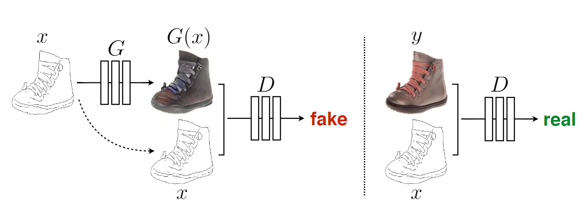
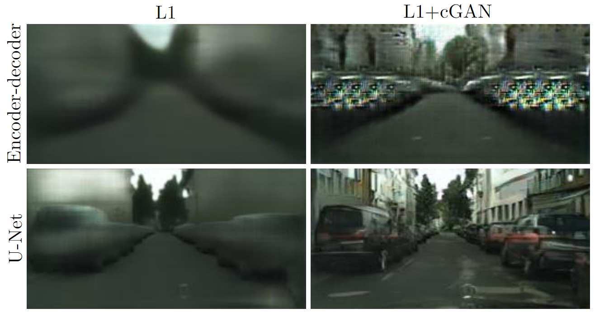
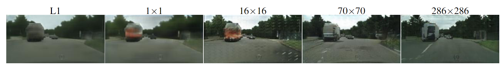
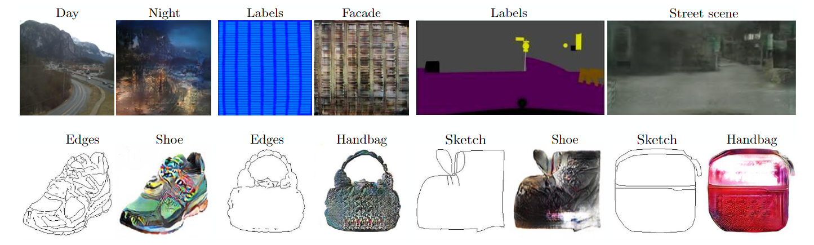

cGAN：条件 GAN
Conditional Generative Adversarial Nets
Mirza M , Osindero S .Conditional Generative Adversarial Nets[J].Computer Science, 2014:2672-2680.DOI:10.48550/arXiv.1411.1784.
Image-to-Image Translation with Conditional Adversarial Networks
Isola P , Zhu J Y , Zhou T ,et al.Image-to-Image Translation with Conditional Adversarial Networks[C]//IEEE Conference on Computer Vision & Pattern Recognition.IEEE, 2016.DOI:10.1109/CVPR.2017.632.
cGAN
条件生成对抗网络（Conditional Generative Adversarial Networks, cGAN）是生成对抗网络（GAN）的一种扩展形式，通过引入 条件信息（如标签、文本、图像等），使生成器和判别器能够根据特定条件生成或判别数据。
- 核心思想是通过条件约束，控制生成内容的属性和结构，从而解决普通 GAN 生成结果不可控的问题。
cGAN 的核心原理
条件信息的引入：
- 生成器（Generator）：输入不仅包含随机噪声 $z$，还包括条件信息 $c$（如类别标签、另一张图像等）。生成器需根据 $c$ 生成对应的数据 $G(z|c)$。
- 判别器（Discriminator）：输入包含真实数据 $x$ 或生成数据 $G(z|c)$，同时结合条件信息 $c$。判别器的任务是判断数据是否真实且与条件匹配，即 $D(x|c)$ 或 $D(G(z|c)|c)$。
cGAN 的损失函数在普通 GAN 的基础上加入了条件约束：
$$ \mathcal{L}_{cGAN}(G,D) = \mathbb{E}_{x,c}[\log D(x|c)] + \mathbb{E}_{z,c}[\log(1 - D(G(z|c)|c)]] $$- 生成器 $G$ 的目标：生成与条件 $c$ 匹配的逼真数据，使 $D(G(z|c)|c)$ 趋近于1。
- 判别器 $D$ 的目标：区分真实数据 $x|c$ 和生成数据 $G(z|c)|c$。
cGAN 对比普通 GAN
| 特性 | 普通GAN | 条件GAN（cGAN） |
|---|---|---|
| 输入 | 随机噪声 $z$ | 随机噪声 $z$ + 条件信息 $c$ |
| 生成控制 | 完全随机 | 通过条件 $c$ 控制生成内容 |
| 应用场景 | 无约束生成（如随机图像生成） | 需特定条件生成（如根据文本生成图像） |
| 典型任务 | 生成随机人脸、艺术品 | 图像到图像转换（pix2pix）、文本到图像生成、可控生成（如风格迁移）、图像修复、图像翻译（如黑白→彩色） |
代码示例
# 生成器（U-Net结构为例）
class Generator(nn.Module):
def __init__(self):
super().__init__()
# 输入：噪声z + 条件图像c
self.encoder = Encoder() # 下采样层
self.decoder = Decoder() # 上采样层（含跳跃连接）
def forward(self, z, c):
x = torch.cat([z, c], dim=1) # 拼接噪声和条件
return self.decoder(self.encoder(x))
# 判别器（PatchGAN结构为例）
class Discriminator(nn.Module):
def __init__(self):
super().__init__()
# 输入：真实/生成图像 + 条件图像c
self.conv_blocks = nn.Sequential(
nn.Conv2d(3 + 3, 64, kernel_size=4, stride=2), # 假设条件c是3通道图像
nn.LeakyReLU(0.2),
# 更多卷积层...
)
def forward(self, x, c):
x = torch.cat([x, c], dim=1) # 拼接图像和条件
return self.conv_blocks(x)
Image-to-Image Translation with cGAN
本文提出使用条件 GANs 作为通用解决方案，通过对抗训练自动学习任务相关的损失函数，避免人工设计损失函数的复杂性。
条件生成对抗网络（Conditional Generative Adversarial Networks, cGANs）最初由 Mehdi Mirza 和 Simon Osindero 在 2014 年的论文 《Conditional Generative Adversarial Nets》 中提出。这篇论文首次将条件信息（如类别标签或辅助数据）引入 GAN 框架，使生成器和判别器能够基于特定条件进行训练和生成。
条件 GANs 的优势：
- 条件输入：生成器和判别器均以输入图像为条件，确保输出与输入的结构对齐（如下图输入边缘图生成对应照片案例中，生成器和判别器都观察输入的边缘）。

- 结合L1损失：在对抗损失基础上引入 L1 损失，保留低频信息（如整体布局），而对抗损失负责高频细节（如纹理和锐度），解决传统 L2 损失导致的模糊问题。
方法细节
目标函数
cGAN 的目标可以表示为：
$$ \mathcal{L}_{cGAN}(G,D) = \mathbb{E}_{x,c}[\log D(x|c)] + \mathbb{E}_{z,c}[\log(1 - D(G(z|c)|c)]] $$目标函数上，总损失函数为对抗损失与 L1 损失的加权和：
$$ G^* = \arg\min_G \max_D \mathcal{L}_{cGAN}(G, D) + \lambda \mathcal{L}_{L1}(G) $$- 对抗损失：迫使生成器输出逼真的图像，判别器区分生成图像与真实图像。
- L1 损失：约束生成图像与真实图像在像素级的一致性，减少模糊（所以不使用 L2 损失）。
随机性的引入：生成器的输入包含随机噪声（通过 Dropout 实现），但实验表明生成结果仍具有较低随机性。这表明当前方法在建模条件分布的多样性方面仍有改进空间。
网络架构
在网络架构上：
- 生成器：带跳跃连接。
- 判别器（马尔可夫随机场）：PatchGAN，尝试对图像中的每个 N × N 块进行真假分类。在图像上卷积运行这个鉴别器，平均所有响应来提供 D 的最终输出。
训练与推演过程
训练中：
- 遵循 GAN 中的优化算法，交替 $D$ 和 $G$ 的 step 训练。
- 在优化 $D$ 时将目标函数除以 2，减慢 $D$ 相对于 $G$ 学习的速率。
- 使用小批量 SGD 并应用 Adam 求解器，学习率为 0.0002，动量参数 $\beta_1 = 0.5$，$\beta_2 = 0.999$。
推演时：
- 与训练阶段相同的方式运行生成器。
实验与验证
论文的第四部分通过广泛的实验验证了条件生成对抗网络（cGAN）在多种图像到图像转换任务中的有效性和通用性.
实验任务与数据集
作者在以下任务中测试了框架的通用性，涵盖图形和视觉任务：
- 语义标签 ↔ 照片（Cityscapes数据集）：将语义分割标签转换为真实街景照片。
- 建筑标签 → 照片（CMP Facades数据集）：将建筑立面线框图转换为真实建筑照片。
- 地图 ↔ 航拍图（Google Maps数据）：实现卫星地图与航拍图的双向转换。
- 黑白 → 彩色（ImageNet数据）：为灰度图像自动着色。
- 边缘 → 照片（UT Zappos50K、Amazon Handbag数据）：从边缘图生成鞋类、手提包等实物图像。
- 草图 → 照片（人类手绘草图）：扩展边缘到照片的模型至非结构化输入。
- 白天 → 夜晚（Webcam数据）：转换场景光照条件。
- 热成像 → 彩色照片（多光谱行人检测数据集）：融合热成像与可见光信息。
- 图像修复（Paris StreetView数据集）：补全图像中缺失的像素区域。
每个任务均使用相同架构（U-Net 生成器 + PatchGAN 判别器）和损失函数（L1 + cGAN），仅更换训练数据。跳转链接
数据需求与训练效率
小数据集表现：
- 建筑标签任务仅需400张图像，训练时间不到2小时（单块Titan X GPU）。
- 昼夜转换任务使用91个摄像头的图像，训练17个周期即收敛。
推理速度：
- 所有模型在GPU上运行时间均小于1秒，支持实时应用。
评估方法
(1) AMT 感知实验
- 设计：通过 Amazon Mechanical Turk 平台进行“真实 vs. 生成”的二选一测试，参与者需在 1 秒内观察图像后判断真伪。
- 结果：
- 地图→航拍图任务中，18.9%的生成图像被误认为真实（显著优于L1基线）。
- 航拍图→地图任务中，生成图像仅6.1%被误判（与L1基线无显著差异），因地图的几何结构更易暴露细节错误。
(2) FCN-score
- 设计：使用预训练的FCN-8s模型（在Cityscapes上训练）对生成图像进行语义分割，计算分割精度（像素准确率、类别准确率、IoU）。
- 意义：衡量生成图像是否保留了输入标签的语义结构。
- 关键结果：
- L1 + cGAN 组合在Cityscapes任务中取得最高分数（像素准确率66%，接近真实数据的80%）。
- 单独使用 L1 损失会导致模糊，单独使用cGAN则可能生成结构错误但逼真的图像。
目标函数分析
通过消融实验验证各损失组件的贡献：
- L1 损失：强制像素级匹配，减少模糊但导致色彩单调。
- cGAN 损失：提升图像逼真性和高频细节（如边缘锐利、色彩丰富），但可能引入结构错误。
- L1 + cGAN：结合二者优势，在逼真性和结构准确性间取得平衡。
生成器架构分析

- U-Net vs. 编码器-解码器：
- U-Net 通过跳跃连接保留低级特征（如边缘位置），在图像着色等任务中显著优于普通编码器-解码器。
- 即使仅用 L1 损失训练，U-Net 仍优于编码器-解码器，证明跳跃连接对信息传递的关键作用。
PatchGAN 尺寸分析

Patch 大小的影响。对于不同的损失函数，输出中的不确定性表现不同。在 L1 下，不确定区域变得模糊和去饱和。1x1 PixelGAN 鼓励更大的色彩多样性，但对空间统计没有影响。16x16 PatchGAN 创建了局部清晰的结果，但也导致了超出其可观察范围的平铺伪影。70×70 PatchGAN强制输出在空间和光谱（色彩）维度上都是清晰的，即使不正确。完整的 286×286 ImageGAN 生成的结果在视觉上与 70×70 PatchGAN 相似，但根据FCN评分指标，质量略低。请参阅 https://phillipi.github.io/pix2pix/ 了解更多示例。
测试不同感受野的判别器：
- 1×1 PixelGAN：仅提升色彩多样性，对空间结构无影响。
- 16×16 PatchGAN：生成局部锐利图像，但出现拼贴伪影。
- 70×70 PatchGAN：最佳平衡，生成全局一致且细节清晰的图像。
- 286×286 ImageGAN（全图判别器）：参数量大、训练困难，且 FCN-score 下降。
全卷积扩展性测试
PatchGAN 固定大小的 Patch 可以应用于任意大的图像。如在 256×256 分辨率训练生成器，直接应用于 512×512 图像。结果是生成高分辨率图像时仍保持质量，证明框架的扩展性。
语义分割任务
实验设计：将 cGAN 应用于照片→语义标签的逆任务。
结果：
- 仅用 cGAN（无L1）可生成粗略标签，但准确率低于 L1 回归。
- 作者认为，结构化输出任务（如分割）因目标明确，更适合传统回归损失。
失败案例分析

每对图像中，左侧为输入，右侧为输出。
常见问题：
- 输入稀疏或异常时，生成器产生伪影（如缺失边缘的区域）。
- 对非常规输入（如抽象草图）的泛化能力有限。
pix2pix 代码示例
class Pix2PixModel(BaseModel):
# ... 省略 ...
def __init__(self, opt):
BaseModel.__init__(self, opt)
# 指定要打印的训练损失。训练/测试脚本将调用<BaseModel.get_current_losses>
self.loss_names = ['G_GAN', 'G_L1', 'D_real', 'D_fake']
# 指定要保存/显示的图像。训练/测试脚本将调用<BaseModel.get_current_visuals>
self.visual_names = ['real_A', 'fake_B', 'real_B']
# 指定要保存到磁盘的模型。训练/测试脚本将调用<BaseModel.save_networks>和<BaseModel.load_networks>
if self.isTrain:
self.model_names = ['G', 'D']
else: # 在测试期间，只加载G
self.model_names = ['G']
# 定义网络（生成器和鉴别器）
self.netG = networks.define_G(opt.input_nc, opt.output_nc, opt.ngf, opt.netG, opt.norm,
not opt.no_dropout, opt.init_type, opt.init_gain, self.gpu_ids)
if self.isTrain:
# 定义一个鉴别器；条件gan需要同时获取输入和输出图像；因此，D 的 channels = input_nc + output_nc
self.netD = networks.define_D(opt.input_nc + opt.output_nc, opt.ndf, opt.netD,
opt.n_layers_D, opt.norm, opt.init_type, opt.init_gain, self.gpu_ids)
if self.isTrain:
# 定义损失函数
self.criterionGAN = networks.GANLoss(opt.gan_mode).to(self.device)
self.criterionL1 = torch.nn.L1Loss()
# 初始化优化器；优化器将由函数自动创建<BaseModel.setup>。
self.optimizer_G = torch.optim.Adam(self.netG.parameters(), lr=opt.lr, betas=(opt.beta1, 0.999))
self.optimizer_D = torch.optim.Adam(self.netD.parameters(), lr=opt.lr, betas=(opt.beta1, 0.999))
self.optimizers.append(self.optimizer_G)
self.optimizers.append(self.optimizer_D)
# ... 省略 ...
def forward(self):
self.fake_B = self.netG(self.real_A) # G(A)
判别器的反向传播（backward_D）
生成假样本输入判别器
- 生成器生成假图像
fake_B，将其与输入图像real_A拼接为fake_AB。 - 通过
fake_AB.detach()切断梯度回传，防止生成器参数在判别器训练时被更新。 - 判别器对假样本的预测结果
pred_fake与标签False计算损失loss_D_fake。
- 生成器生成假图像
处理真实样本
- 将真实图像对
real_A和real_B拼接为real_AB。 - 判别器对真实样本的预测结果
pred_real与标签True计算损失loss_D_real。
- 将真实图像对
计算总损失并反向传播
- 总损失为真假样本损失的平均值：$\text{loss}_{\text{D}} = (\text{loss}_{\text{D_fake}} + \text{loss}_{\text{D_real}}) / 2$
- 执行
loss_D.backward()计算梯度，通过optimizer_D.step()更新判别器参数。
def backward_D(self):
"""计算鉴别器的 GAN 损失"""
# Fake；通过分离 fake_B 来停止对生成器的反向传播
# 使用条件 GAN，需要将输入和输出都提供给网络
fake_AB = torch.cat((self.real_A, self.fake_B), 1)
pred_fake = self.netD(fake_AB.detach())
self.loss_D_fake = self.criterionGAN(pred_fake, False)
# Real
real_AB = torch.cat((self.real_A, self.real_B), 1)
pred_real = self.netD(real_AB)
self.loss_D_real = self.criterionGAN(pred_real, True)
# 结合损失和计算梯度
self.loss_D = (self.loss_D_fake + self.loss_D_real) * 0.5
self.loss_D.backward()
生成器的反向传播（backward_G）
对抗损失（GAN Loss）
- 将生成的假图像
fake_B与输入图像real_A拼接为fake_AB，输入判别器得到预测结果pred_fake。 - 计算对抗损失
loss_G_GAN，目标是让判别器认为生成的图像为真（标签True）。
- 将生成的假图像
L1 重建损失
- 计算生成图像
fake_B与真实图像real_B的像素级 L1 损失loss_G_L1，乘以权重系数lambda_L1（通过opt.lambda_L1控制）。
- 计算生成图像
计算总损失并反向传播
- 总损失为对抗损失与L1损失之和：$\text{loss}_{\text{G}} = \text{loss}_{\text{G_GAN}} + \text{loss}_{\text{G_L1}}$
- 执行
loss_G.backward()计算梯度，通过optimizer_G.step()更新生成器参数。
def backward_G(self):
"""计算生成器的 GAN 和 L1 损失"""
# 1. G(A) 应该骗过判别器
fake_AB = torch.cat((self.real_A, self.fake_B), 1)
pred_fake = self.netD(fake_AB)
self.loss_G_GAN = self.criterionGAN(pred_fake, True)
# 2. G(A) = B
self.loss_G_L1 = self.criterionL1(self.fake_B, self.real_B) * self.opt.lambda_L1
# 结合损失并计算梯度
self.loss_G = self.loss_G_GAN + self.loss_G_L1
self.loss_G.backward()
训练流程（optimize_parameters）
前向传播生成假图像：
self.forward()调用生成器生成fake_B。更新判别器：
- 解冻判别器参数（
set_requires_grad(self.netD, True)）。 - 清零梯度（
optimizer_D.zero_grad()）。 - 计算判别器损失并反向传播（
backward_D()）。 - 更新参数（
optimizer_D.step()）。
- 解冻判别器参数（
更新生成器：
- 冻结判别器参数（
set_requires_grad(self.netD, False)）。 - 清零梯度（
optimizer_G.zero_grad()）。 - 计算生成器损失并反向传播（
backward_G()）。 - 更新参数（
optimizer_G.step()）。
- 冻结判别器参数（
def optimize_parameters(self):
self.forward() # 计算生成器生成的假图像: G(A)
# 更新 D
self.set_requires_grad(self.netD, True) # 启用 D 的反向传播
self.optimizer_D.zero_grad()
self.backward_D()
self.optimizer_D.step()
# 更新 G
self.set_requires_grad(self.netD, False) # D 在更新 G 时不需要梯度
self.optimizer_G.zero_grad()
self.backward_G()
self.optimizer_G.step()
局限性与启示
- 随机性不足：生成结果偏向确定性，难以建模多模态输出（如同一输入对应多种合理输出）。
- 复杂任务表现：在高度结构化任务（如语义分割）中，cGANs 效果不及纯 L1 回归，表明对抗训练更适用于需细节生成的图形任务。
- 社区应用：开源代码（pix2pix）被广泛用于艺术创作（如草图转肖像、背景去除），验证了其易用性和扩展性。